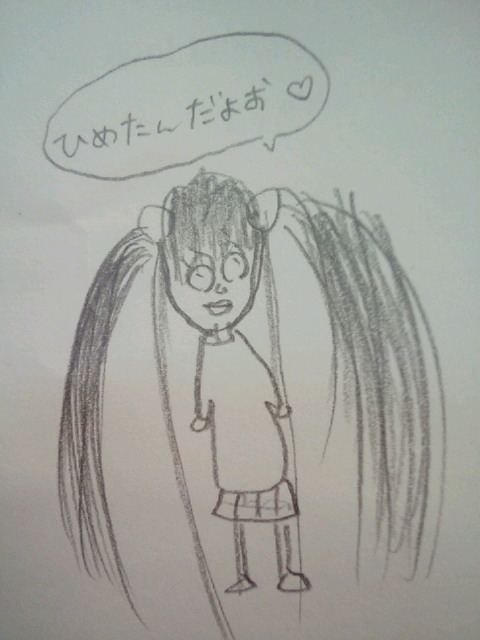

| 2012/06 22 Fri | ひめたん(* ゝω・*)ノ その172 |
乃木坂って、ここ!
今回はボーリング大会してきました(*^ω^*)
新制服解禁ねーこちらっ

画質悪いけ申し訳ないんじゃけど、ひめたんは青いブラウス着てんの♪
青、紫、オレンジの爽やかな感じになっておりますよ
んーさっすが夏服!
半袖とか夏服ね。このリボンかわういー好きー☆
紺色のプリーツスカートも可愛いんだこれが。
ちなみにいっこ前の制服は
結局最後まで自分でネクタイ結べませんでした。なき
今日の質問ー
あなたのボーリング過去最高スコアは？
ということでボーリングしてきたの。
久々ね。一番最後にボーリングしたのは一年とちょっと前かしら
いっやーまさか一投目に９本倒れるとはね(ω)けろ
ひめたんはやっぱり天才なんかもしれない。
みさみさひめたんねねころってぃーチーム、応援してね☆予選は第２試合だからね
今日学校にツインテしてったら、友達が似顔絵描いてくれたー
のでブログに貼ってみなさんに見ていただこう∩^ω^∩
んーわくわく
似顔絵の感想をよかったら教えてね。画伯にそのまんま伝えますのでね。
あ余談で、画伯は女の子です。
頭良くて、運動できて、優しくて面白くて。
数学のテストの模範解答を写めで送ってーてお願いしたら
わざわざお手製の解説まで書いて送ってくれる、素敵な子。
絵心？言うまでもなく天才才ですよ(^^)
てれれれれーん

 素朴な疑問だけど文字に色が入ってるけど何で打ってるんですかぁ！？
素朴な疑問だけど文字に色が入ってるけど何で打ってるんですかぁ！？
ひめたんので文を全部打ったのちに
ままのスマホに送って、そっちで文字色を変える。
地味に大変な作業です(ω)いいの、それでより読みやすくなるんなら。
 ひめたんは暑い夏どうやって乗り切る？？
ひめたんは暑い夏どうやって乗り切る？？
すでにばてばてよー。
もうねーいっちゃんいい方法はお外に行かないことだと思う。
毎日お部屋ん中で冷房たいて冷たいもん食べとったら、そのうち体が
「あれー今は冬かしら」ってなるだろうから、そしたら完璧☆
 浮気者の俺と握手してくれますか？ww
浮気者の俺と握手してくれますか？ww
ひめたんはいいけど、推しの子に申し訳ない(´・_・`)
推しめんの許可がおりたらかもーん♪
ひめたんビームやってみたら、意外と受けよかった！
今後も使ってみていい藁？
ひめたんビームはひめたんにしか放てないはず...
一体どこで修得したのよー？
こうなったらひめたんビーム広めるしかー!!!
次に会う時また日芽香の笑顔見れるんだよね？
それは約束しましょう(*^ω^*)にこ
 今度ひめたんに握手しに行っていい
今度ひめたんに握手しに行っていい
是非ぜひ来てきて!
ゆっくりお話ししましょーうね＼(^O^)／
何か話したいことあったら考えてみてください。
なんもなきゃー...
どうしよう。ま楽しくすごしましょう。うんそうしよう
ひめたん握手会大好きよー☆
 もうすぐテストやから応援ちょうだい
もうすぐテストやから応援ちょうだい
あれれ一緒じゃん!ひめたんも２週間後テストなの。いっしょー
一緒に頑張りましょーう＼(^O^)／
徹夜でお勉強してるからって、授業で寝ちゃだめよ。
...とか言える立場じゃない。ううう
自分は高知県出身なんですがひめたんは高知県には来た事がありますか？
高知は行ったことなーい。高知県出身とかゆー友達も周りにおらんなあ。
なんとなく。なんとなくだけど
広島から高知までって車で行けそうな気がする(^^)近いイメージよ。
最近どうっすか？w
来たこれ。わらわら
何か、1日が終わるのが早いです。
やりたいこといっぱいあるのに、何もできんまま後悔しながら寝る...
そこである日考えてみたの
1日が30時間あったら、ひめたんはこんなに忙しくなかったのかなって。
...。
あ結論から言うと、
時間が増えたら、そのぶん授業もお仕事も増えて課される課題も増えて
それでくたくたになるんだけど、そのぶん睡眠時間も増えて
プラマイぜろ、なはず。
 ひめたんは父の日のプレゼントにどんなお洋服を選んだのかな？
ひめたんは父の日のプレゼントにどんなお洋服を選んだのかな？
黒と白のシックなやつ!
前にレモンいろーの爽やかーな感じとか、ストライプの爽やかーな感じとか
いろいろプレゼントしたことあるから、
今回はあえて抑えてみたのです(ω)
ひめたんが男の子だったらぱぱさんになにしてあげますか！？
何してほしいー？
スポーツ観戦に連れてってあげるとか？
いやいや娘でも十分連れてってあげれるわー...
(*´・ω・*)ひめたん
コメント(135)
2012/06/22 23:18